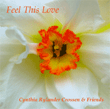

Recording: Ken Crossen, Mixing: Jesse Crossen
Produced by: Cynthia Crossen
Photos: Ken Crossen
Cover/CD design and art: Cynthia, Ken, and Jesse Crossen
Feel This Love began with the songs "Feel This Love" and "Bubbles of Light", which came to me as I helped care for Faye Duncan who was ill with cancer. Faye died in February 2001. Her last days were a great teaching to those who knew her. She was not dying, but living every day she was here. We sang to Faye. She loved "Every Blade of Grass" and "Angels For Each Other". She understood the healing nature of music, and she understood my role in it perhaps better than I did.
As I shared these songs with close friends, in an ecstatic hour together singing "Feel This Love" on my screen porch one green misty gently raining July afternoon, the idea came to me. I would gather friends to sing these songs, put a mike in the middle of our singing, breathing, circle, and capture this healing energy to share it with others who need it. That's how we recorded 6 of the songs on the album. The other 6 shorter songs had already been recorded here and there. I used them as differently shaped and colored beads to add beauty to the necklace.
We did the whole project very quickly--I began contacting musicians in January 2002, and the album was in hand by May 2002. Daffodils, that extraordinary bursting forth of common beauty, faithful every spring, became the artistic theme. The cover photo Ken took is a daffodil from our yard.
Serendipity graced this project--for example, with "Every Blade of Grass". I had always sung this song with groups of women, and intended to record it with women as well as some men's voices. I got together with Johnny, Paul, John, and Jesse one March evening in our rustic cabin in the woods, to rehearse the guitar parts and work on an arrangement. The frogs were loud and high and sweet. We began singing and playing, and I heard the song in an entirely new way. This was it! I dragged Ken out of bed and urged him to set up the recording equipment. A few minutes later, we had captured a unique sound, something different and unexpected, angels of a deeper voice. And this is the version we kept--we didn't bother recording another one.
The musicians who worked with me each brought their creative and loving presence to the music. For each large group song, we worked for four hours and went with the last version we recorded. There was sweating, and suffering through allergy season, and charts with seven colors denoting parts and arrangements. There was gracious plenty cooperation and help, heartfelt effort and love. Afterwards we shared soup and listened to our newly-minted song. I am deeply grateful. I imagine this love and care coming through to the listener.
So, use this music if it sings to you, and send it where it needs to go. I have found that it can totally turn around a bad day. It works if you are already in joy or if you are desperately in need of it. May it bless you and fly where it can bring love and healing.